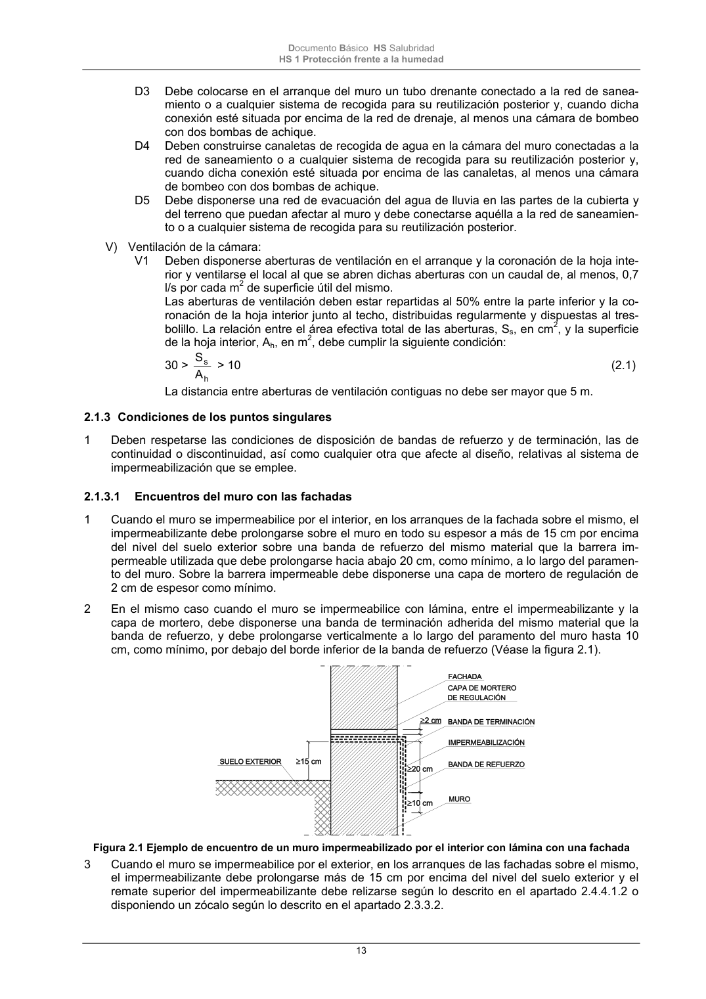
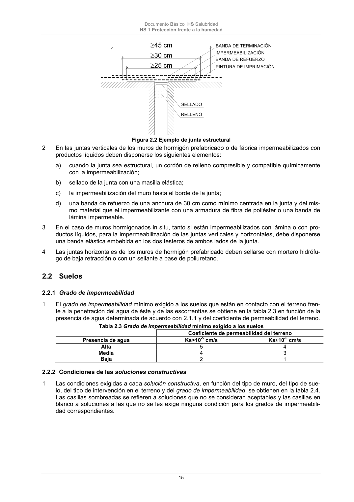

DB-HS · 2.1.3 Condiciones de los puntos singulares · versión 2022-06-14 · capa oficial
Formatos: JSON compacto · Markdown · PDF fuente
Ámbito del documento · texto del ámbito · documento y tablas
ID técnico a0041 · PDF pág. 13-15 · jerarquía no validada por persona · contrastado con el literal de la página 13 (candidato tipográfico); no validado por persona · padre: raíz
2.1.3 Condiciones de los puntos singulares 1 Deben respetarse las condiciones de disposición de bandas de refuerzo y de terminación, las de continuidad o discontinuidad, así como cualquier otra que afecte al diseño, relativas al sistema de impermeabilización que se emplee. 2.1.3.1 Encuentros del muro con las fachadas 1 Cuando el muro se impermeabilice por el interior, en los arranques de la fachada sobre el mismo, el impermeabilizante debe prolongarse sobre el muro en todo su espesor a más de 15 cm por encima del nivel del suelo exterior sobre una banda de refuerzo del mismo material que la barrera im- permeable utilizada que debe prolongarse hacia abajo 20 cm, como mínimo, a lo largo del paramen- to del muro. Sobre la barrera impermeable debe disponerse una capa de mortero de regulación de 2 cm de espesor como mínimo. 2 En el mismo caso cuando el muro se impermeabilice con lámina, entre el impermeabilizante y la capa de mortero, debe disponerse una banda de terminación adherida del mismo material que la banda de refuerzo, y debe prolongarse verticalmente a lo largo del paramento del muro hasta 10 cm, como mínimo, por debajo del borde inferior de la banda de refuerzo (Véase la figura 2.1). Figura 2.1 Ejemplo de encuentro de un muro impermeabilizado por el interior con lámina con una fachada 3 Cuando el muro se impermeabilice por el exterior, en los arranques de las fachadas sobre el mismo, el impermeabilizante debe prolongarse más de 15 cm por encima del nivel del suelo exterior y el remate superior del impermeabilizante debe relizarse según lo descrito en el apartado 2.4.4.1.2 o disponiendo un zócalo según lo descrito en el apartado 2.3.3.2. Documento Básico HS Salubridad HS 1 Protección frente a la humedad 14 4 Deben respetarse las condiciones de disposición de bandas de refuerzo y de terminación así como las de continuidad o discontinuidad, correspondientes al sistema de impermeabilización que se em- plee. 2.1.3.2 Encuentros del muro con las cubiertas enterradas 1 Cuando el muro se impermeabilice por el exterior, el impermeabilizante del muro debe soldarse o unirse al de la cubierta. 2.1.3.3 Encuentros del muro con las particiones interiores 1 Cuando el muro se impermeabilice por el interior las particiones deben construirse una vez realiza- da la impermeabilización y entre el muro y cada partición debe disponerse una junta sellada con material elástico que, cuando vaya a estar en contacto con el material impermeabilizante, debe ser compatible con él. 2.1.3.4 Paso de conductos 1 Los pasatubos deben disponerse de tal forma que entre ellos y los conductos exista una holgura que permita las tolerancias de ejecución y los posibles movimientos diferenciales entre el muro y el conducto. 2 Debe fijarse el conducto al muro con elementos flexibles. 3 Debe disponerse un impermeabilizante entre el muro y el pasatubos y debe sellarse la holgura entre el pasatubos y el conducto con un perfil expansivo o un mástico elástico resistente a la compresión. 2.1.3.5 Esquinas y rincones 1 Debe colocarse en los encuentros entre dos planos impermeabilizados una banda o capa de refuer- zo del mismo material que el impermeabilizante utilizado de una anchura de 15 cm como mínimo y centrada en la arista. 2 Cuando las bandas de refuerzo se apliquen antes que el impermeabilizante del muro deben ir adhe- ridas al soporte previa aplicación de una imprimación. 2.1.3.6 Juntas 1 En las juntas verticales de los muros de hormigón prefabricado o de fábrica impermeabilizados con lámina deben disponerse los siguientes elementos (Véase la figura 2.2): a) cuando la junta sea estructural, un cordón de relleno compresible y compatible químicamente con la impermeabilización; b) sellado de la junta con una masilla elástica; c) pintura de imprimación en la superficie del muro extendida en una anchura de 25 cm como mí- nimo centrada en la junta; d) una banda de refuerzo del mismo material que el impermeabilizante con una armadura de fibra de poliéster y de una anchura de 30 cm como mínimo centrada en la junta; e) el impermeabilizante del muro hasta el borde de la junta; f) una banda de terminación de 45 cm de anchura como mínimo centrada en la junta, del mismo material que la de refuerzo y adherida a la lámina. Documento Básico HS Salubridad HS 1 Protección frente a la humedad 15 Figura 2.2 Ejemplo de junta estructural 2 En las juntas verticales de los muros de hormigón prefabricado o de fábrica impermeabilizados con productos líquidos deben disponerse los siguientes elementos: a) cuando la junta sea estructural, un cordón de relleno compresible y compatible químicamente con la impermeabilización; b) sellado de la junta con una masilla elástica; c) la impermeabilización del muro hasta el borde de la junta; d) una banda de refuerzo de una anchura de 30 cm como mínimo centrada en la junta y del mis- mo material que el impermeabilizante con una armadura de fibra de poliéster o una banda de lámina impermeable. 3 En el caso de muros hormigonados in situ, tanto si están impermeabilizados con lámina o con pro- ductos líquidos, para la impermeabilización de las juntas verticales y horizontales, debe disponerse una banda elástica embebida en los dos testeros de ambos lados de la junta. 4 Las juntas horizontales de los muros de hormigón prefabricado deben sellarse con mortero hidrófu- go de baja retracción o con un sellante a base de poliuretano.


PDF fuente redistribuible: copia fiel enlazada en esta página (SHA256 verificado).